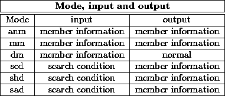

Using irpr, you can add, update, delete and search members.
How to use the commands
Use irpr comannds as follows.
irpr_client Mode < filename
If you designate an operation by "Mode" argument, and give search condition or member information to standard input, the result will be returned to standard output.
Operations you can designate by "Mode" argument are shown below.
The next table shows the relationship between "Mode", input and output.

Abnormal end is also reported to standard output when necessary.
Updated or deleted member information is added to meibo-history table. The version of updated member information becomes a proper value automatically.
Member Information
Following is an example of member information.
[id("0000000099"),
name_e("Tommy Hase"),
name_for_search("Tommy Hase"),name_for_search("TommyHase"),
name_for_search("TOMMY HASE"),neme_for_search("T.Hase"),
prefix("Mr."),organization_address("1352 carving ave newtown LA 18954usa"),
organization_e_mail("thase@cupper.com"),info1("ifs"),info2("e"),
source("ifsFF"),version(3),date("Thur Sep 3 17:26:40 JST1998"),user("kato"),
remarks("ff"),valid_flag(valid)].
The format of member information must abide by the following rules.
Search conditions
Examples of search condition are shown below.
Search conditions must abide by the following rules.
<condition> ::= attribute_name <comparison operator> <fixed search value>
| attribute_name = <fixed search value>
| attribute_name = <partially matching search value>
| ( <condition> )
| <condition> <logical operator> <condition>
<partially matching search value> ::= "*search_value" |
"search_value*" | "*search_value*"
<fixed search value> ::= integer | string of not partially matching
search value
<logical operator> ::= and | or | dif
<comparison operator> ::= > | >= | < | =<